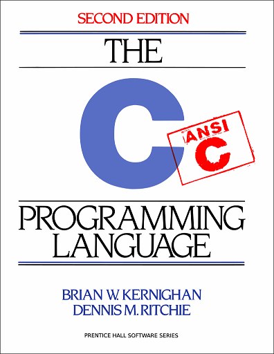
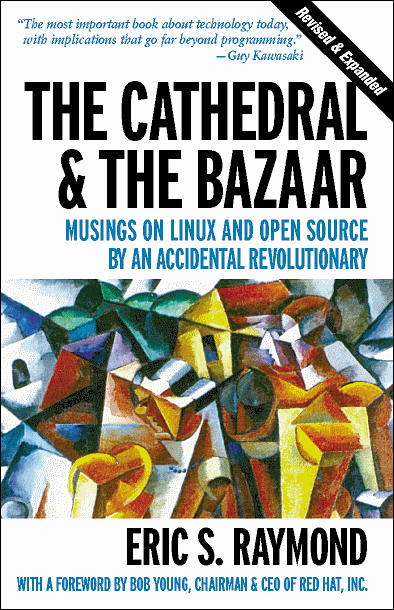
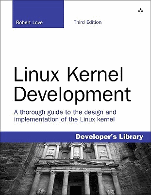
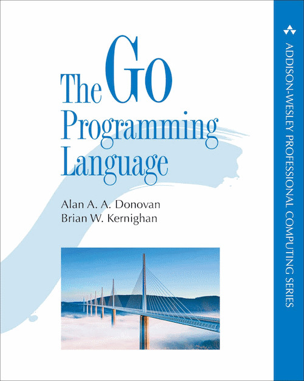

hi;
my name is hamid ghader. i'm a software engineer based in london. i enjoy {coding} in golang and reading c & unix/linux stuff. my favourite tech books include:




and this is my favourite talk on ted, i've probably watched it over 20 times and still watchin' it whenever i need some motivation.